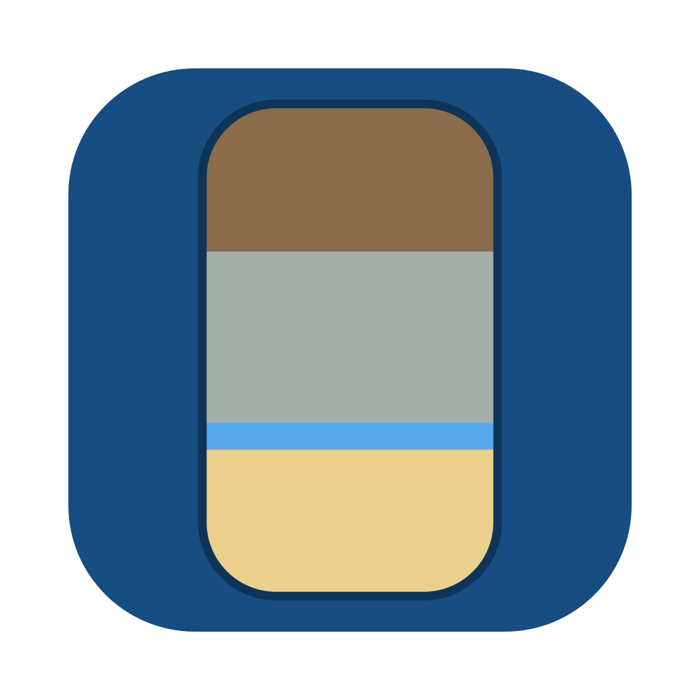
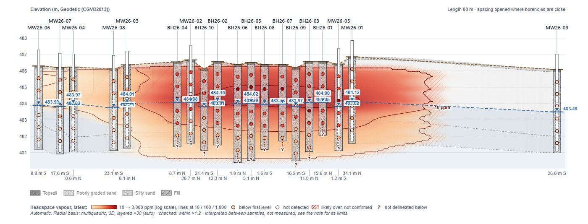
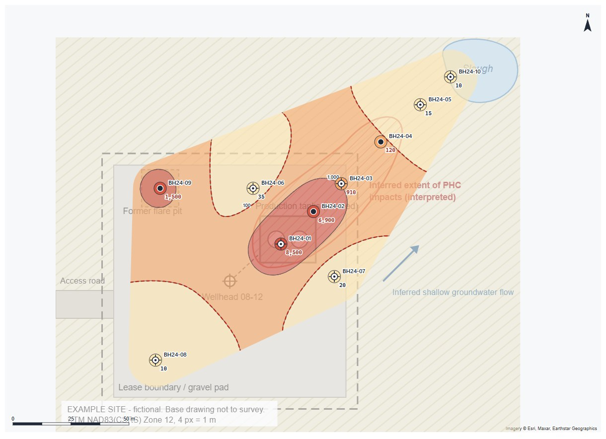
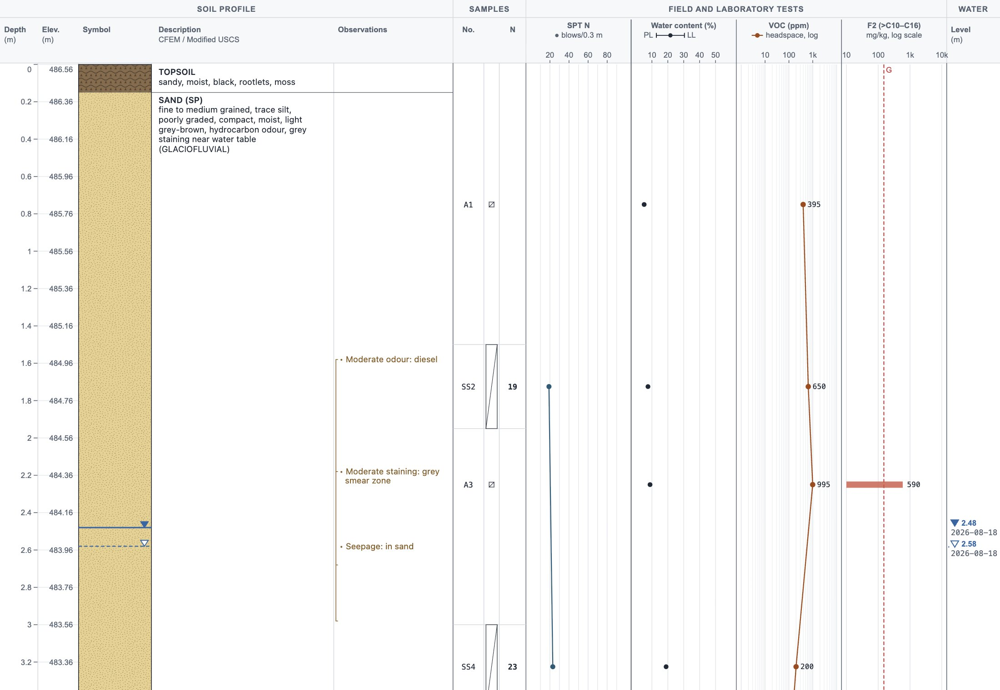
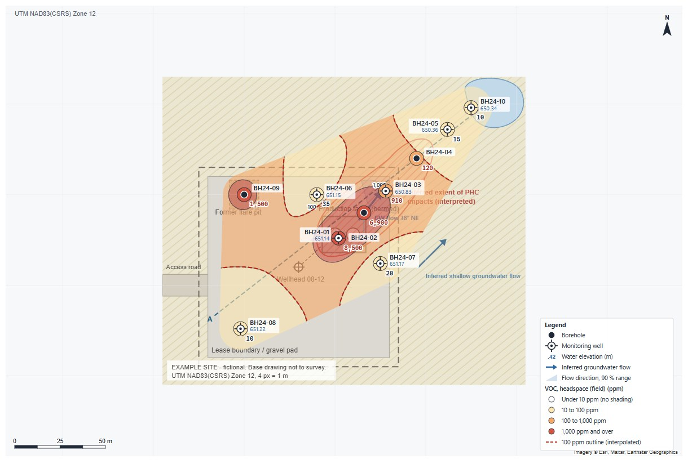
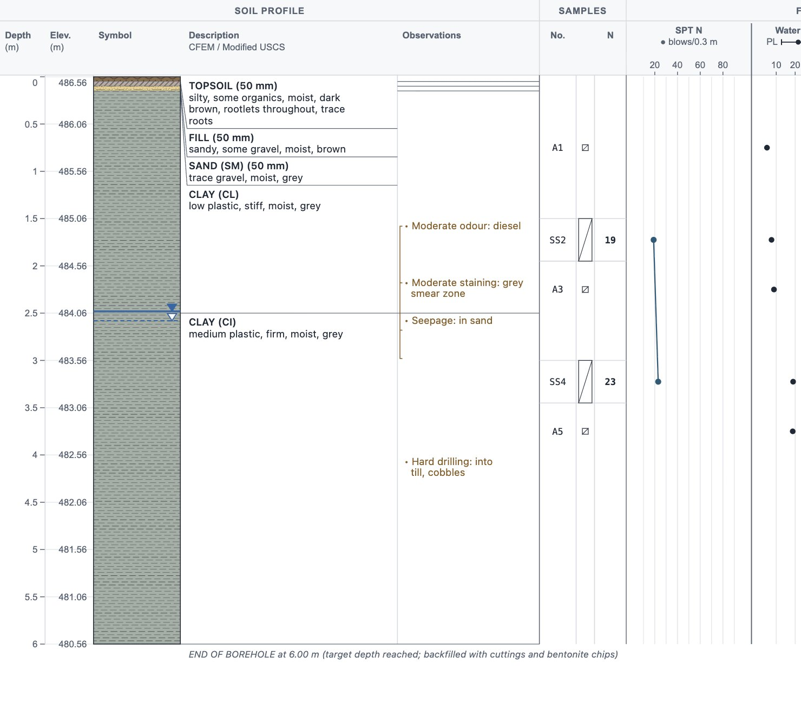
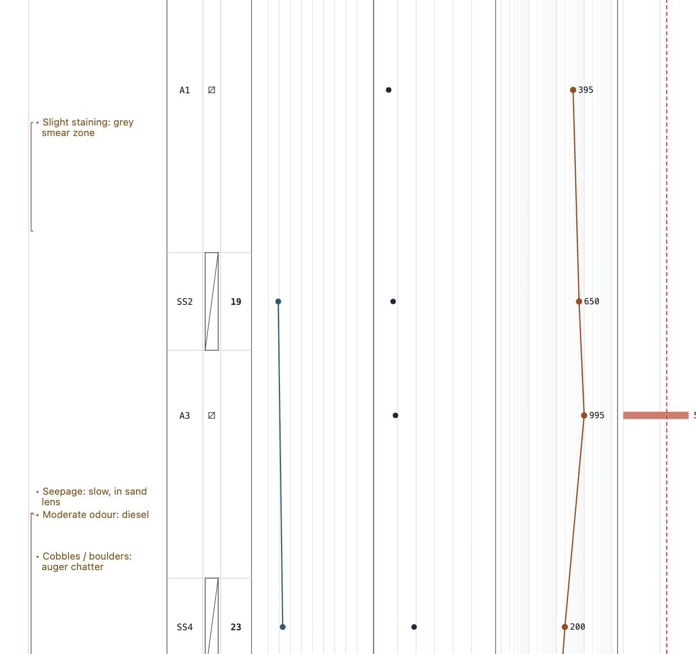
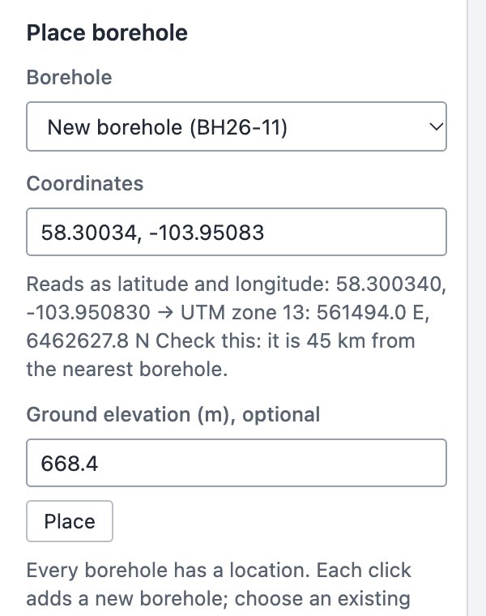
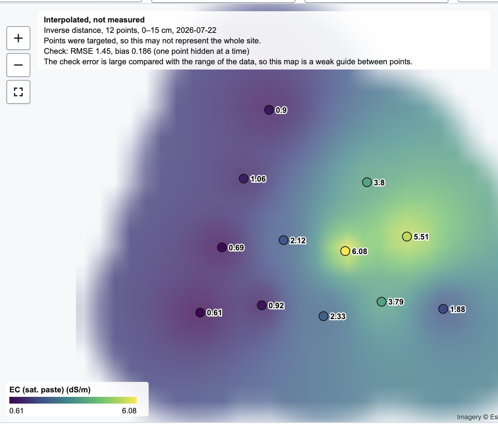

Borehole logs
CFEM and Modified USCS descriptions in the order you write them, samples, SPT, VOC and lab results, water levels and wells, on your title block.

Borehole Field LogFor geotechnical and environmental work · Alberta and Saskatchewan
Log boreholes in CFEM and Modified USCS terms, map the results, draw cross-sections with the soil, the water table and the plume, and lay out report figures that print as clean PDFs. Windows and Mac; it works offline.

CFEM and Modified USCS descriptions in the order you write them, samples, SPT, VOC and lab results, water levels and wells, on your title block.
Boreholes on imagery or your site drawing, VOC and lab results contoured between them by the most accurate method for the data, with clean labels at any zoom.
Soil joined between boreholes in order, pinch-outs from thickness trends, the water table across the section, and 3D plumes from every borehole near the line.
Water-table contours and the flow direction with its range, hydrographs, and a MODFLOW 6 model run from the project for heads and flow paths.
Lay out figures with maps, sections, legends, north arrows and scale bars, save each to a library and export them as vector PDFs with clean lines.
PDF, Excel, AGS 4 and GIS exports, and single-borehole files to share. No account, nothing leaves your computer.

Pick Automatic and each reading is predicted from the others with every method; the most accurate is used, and the map says which and how far to trust it.

Type a layer the way you would say it and it is read into soil, modifiers, compactness or consistency, moisture, colour and origin, then drawn with its symbol.

An output map follows the Map page, or keeps its own view, labels and symbols, and says which. Save each figure to the library as it is and export one or all.




Pick your computer and download the installer. Your boreholes and settings stay on your computer, and earlier versions update in place.
—Not code-signed yet, so Windows asks you to confirm it. How to install on Windows
Loading…
Yes, and it is expected: the Windows installer isn’t code-signed yet, so Windows and your browser warn about it, and each new version warns again.
Open the downloaded .dmg and drag Borehole Field Log to Applications, then open it from there. It is signed and notarized by Apple, so it opens without warnings. It needs a Mac with Apple silicon (M1 or newer).
Compare its SHA-256 with the one shown with the download. On Windows, in PowerShell:
Get-FileHash .\Borehole-Field-Log-Setup-*.exeOn a Mac, in Terminal:
shasum -a 256 ~/Downloads/Borehole-Field-Log-*.dmgOnce a day when it starts, the app asks GitHub whether a newer version is out. If there is one, it shows what is new; Download brings you here, and you install it the same way. You can turn the daily check off under Help › Check for updates.
Yes. Logging, maps, cross-sections, the groundwater model, PDFs, Excel and AGS exports all work offline. Only map backgrounds and the update check use the internet.
Every interpolated map and plume says how it was made and checks itself: each reading is predicted from the others and the typical error is stated. Shading fades where few samples support it, unconfirmed areas are hatched, and the limits are written in the figure’s note. Between boreholes it is an estimate, not a measurement.
Nowhere: there is no account, no tracking and no analytics, and your boreholes stay on your computer and in the files you save. Map requests carry only the area in view. Read the privacy policy and terms of use.
Windows 10 or 11, 64-bit, and Macs with Apple silicon (M1 or newer).